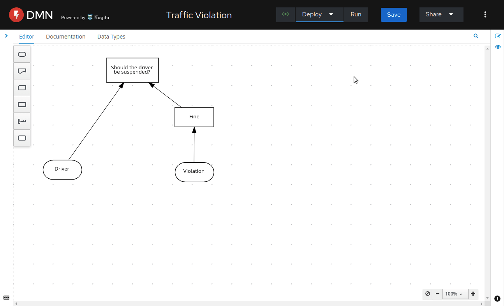
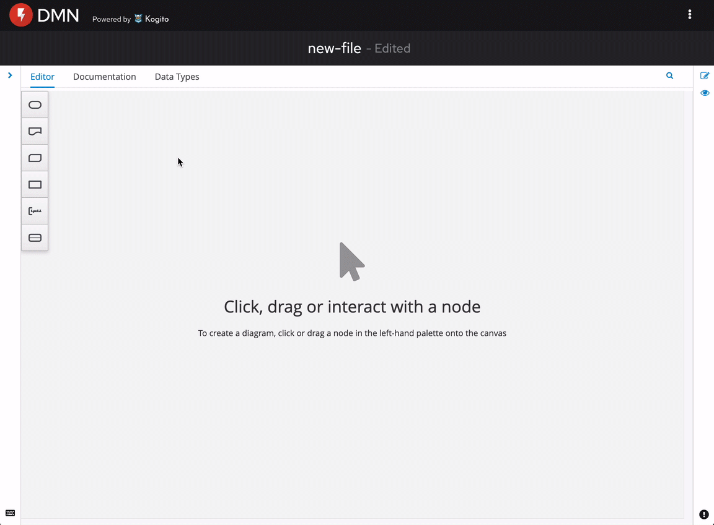
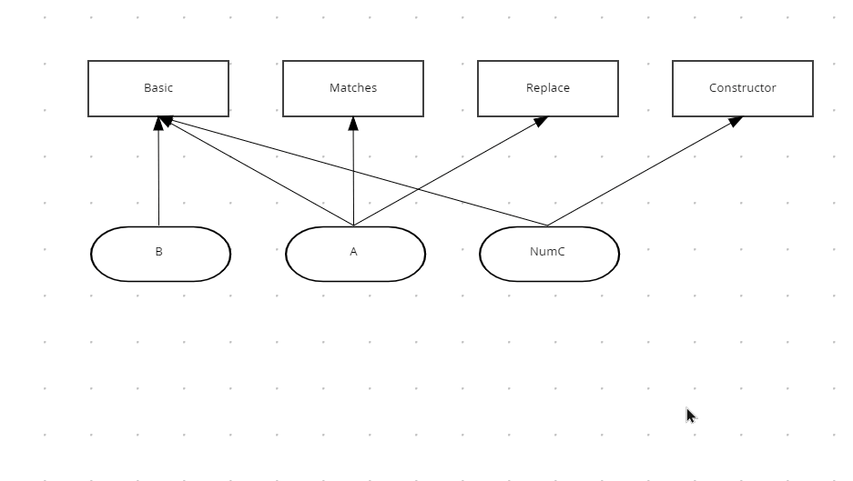
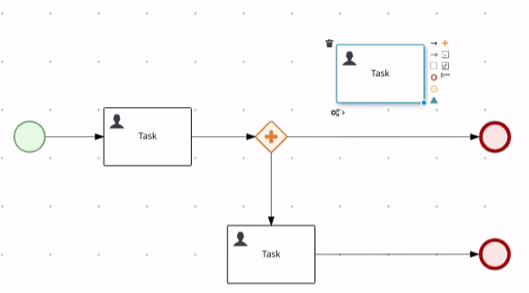
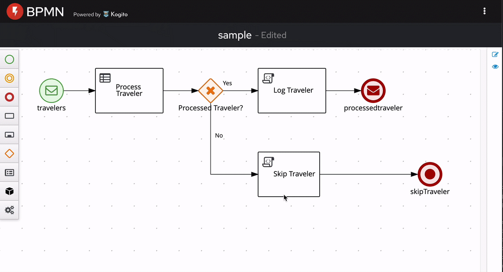
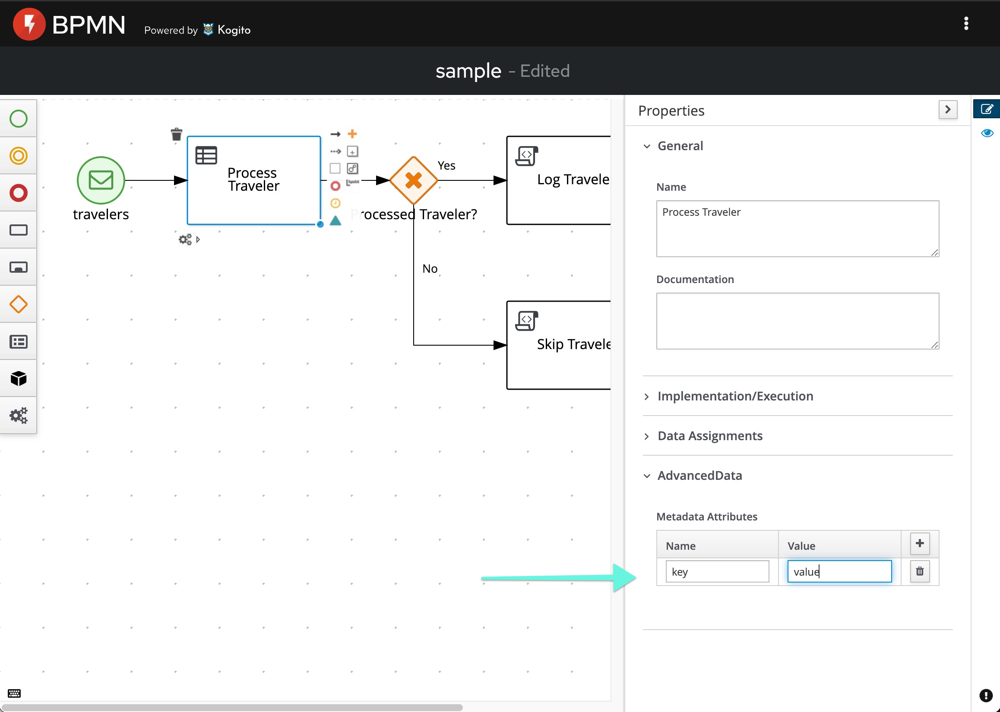

Kogito Tooling 0.12.0 Released!
We have just launched a fresh new Kogito Tooling release! 🎉 On the 0.12.0 release, we made a lot of improvements and bug fixes. We are also happy to announce that this release marks the first iteration of our ‘DMN deploy on OpenShift’ feature, and also we have a lot of improvements on our DMN and BPMN Editors.
This post will give a quick overview of this release. I hope you enjoy it!
Deploy decisions to DMN Developer Sandbox on dmn.new
We just launched in our dmn.new environment a feature that allows you to quickly deploy decision models to the Developer Sandbox for Red Hat OpenShift.

This feature is super cool, and I invite you to give it a try. You can also check more details on this blog post.
DMN nodes are not created on top of the selected node
DMN diagrams are generally vertical (whereas BPMN is horizontal). When adding a “Decision Node” from a “DMN Input Data,” for better usability, now the nodes are created on top of the selected node.

DMN support for bend-points on connectors
We also added support for bend-points on the DMN diagram that are pretty useful, especially on Complex DMN diagrams.

See this blog post for more details.
Line splicing for BPMN and DMN editors
Line splicing is a new feature that allows dropping an existing node on top of a connector and automatically split it into two new connectors. This was included in both our DMN and BPMN editors.

Soon we will publish a blog post with a detailed description of this feature.
Resize control points improvements
We made many improvements on resizing control points for our BPMN and DMN editor, including changing the resize icon and modifying how magnets react on a resize.

Support for process metadata attributes
We also added a new AdvancedData that allows users to add generic metadata to all node types and event types in the BPMN editor.

New Features, fixed issues, and improvements
- KOGITO-2313 – BPMN Editor – Support for node/events metadata attributes
- KOGITO-5072 – DMN Developer Sandbox for Red Hat OpenShift
- KOGITO-1686 – DMN target position is not stored
- KOGITO-3164 – Stunner – Task Resize option doesn’t show up
- KOGITO-4941 – [DMN Editor] Ctrl-B always converts field to structure and nests
- KOGITO-5091 – VSCode DMN, BPMN editor – creating connection can’t be cancelled easily
- KOGITO-5241 – Stunner – Resize Icon remains displayed
- KOGITO-5470 – BPMN Editor – Cannot import some processes
- KOGITO-5479 – DMN Runner – Wizard step for running
- KOGITO-5506 – BPMN Editor – Marshallers encoding issues
- KOGITO-5571 – [Test Scenario] No effects when assigning a not-expression Simple Type column to expression type (and viceversa)
- KOGITO-5576 – BPMN Editor – Moving connector’s bendpoints results on erros in the console
- KOGITO-5594 – [Stunner] bend point modification causes diagram inaccessible
- KOGITO-5274 – Stunner – Line splicing
- KOGITO-4827 – Implement E2E automation for Reuse of Data Types in BPMN Designer
- KOGITO-5382 – Verify support for node/event metadata attribues feature
- KOGITO-5422 – Stunner – first POC of new marshallers
- KOGITO-5489 – [DMN Designer] When users create a node by using a shortcut, it’s not created above
- KOGITO-5496 – Update vscode-extension-tester to 4.1.0
- KOGITO-5648 – [DMN/BPMN] Wired web apps – Fix doc screenshot
- KOGITO-4413 – Implement – designs for orthogonal lines between diagram nodes
- KOGITO-4765 – [Test Scenario] – Errors when executing models using imported inputs and/or decisions nodes
- KOGITO-4978 – Stunner – Make new nodes editable automatically
- KOGITO-4979 – Stunner – Resize control points – Fixes & UX improvements
- KOGITO-5119 – [DMN Designer] Add support for bend-points on connectors
- KOGITO-5208 – [Stunner] Lienzo – Migration to native interfaces
- KOGITO-5242 – Stunner – Alignment helpers missing during node resize
- KOGITO-5549 – Stunner – WID files with comments and Imports can’t be loaded
Further Reading/Watching
We had some excellent blog posts on Kie Blog that I recommend you read:
- Instantaneous Feedback Loop for DMN Authoring with DMN Runner, by Eder Ignatowicz;
- Add SQL datasource for authoring dashboards, by Manaswini Das;
- Bend-points and the DMN Editor, by Daniel José dos Santos;
- Kogito Tooling i18n update, by Luiz Motta;
- Add data from KIE execution server for authoring dashboards, by Manaswini Das;
- How to develop better web widgets with showcase applications, by Valentino Pellegrino;
- Four steps to author BPMN and DMN assets on gitpod.io, by Guilherme Caponetto.
We also presented in some Kie Lives:
- [KIELive#40] DMN Dev Sandbox Developing and deploying DMN decisions in the cloud, by Tiago Bento;
- [KIELive#41] Reliable DMN with Test Scenarios, by Yeser Amer;
Thank you to everyone involved!
I would like to thank everyone involved with this release, from the excellent KIE Tooling Engineers to the lifesavers QEs and the UX people that help us look awesome!

{kind=link}
{kind=link}
{kind=link}
{kind=link}
{kind=link}